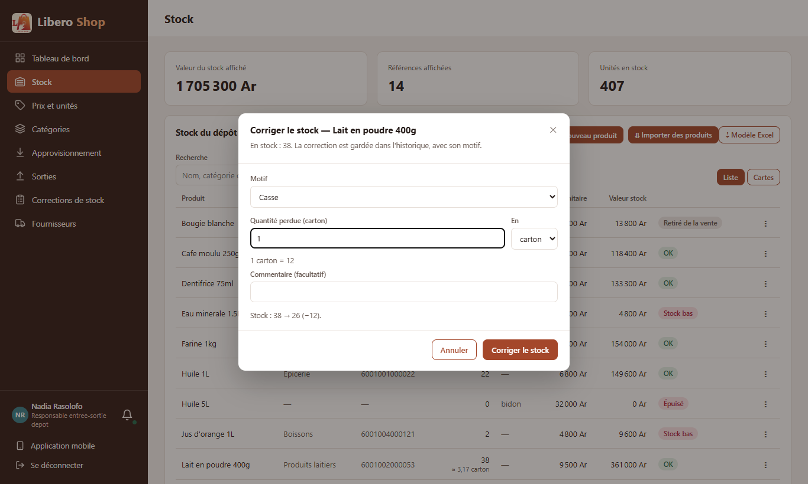
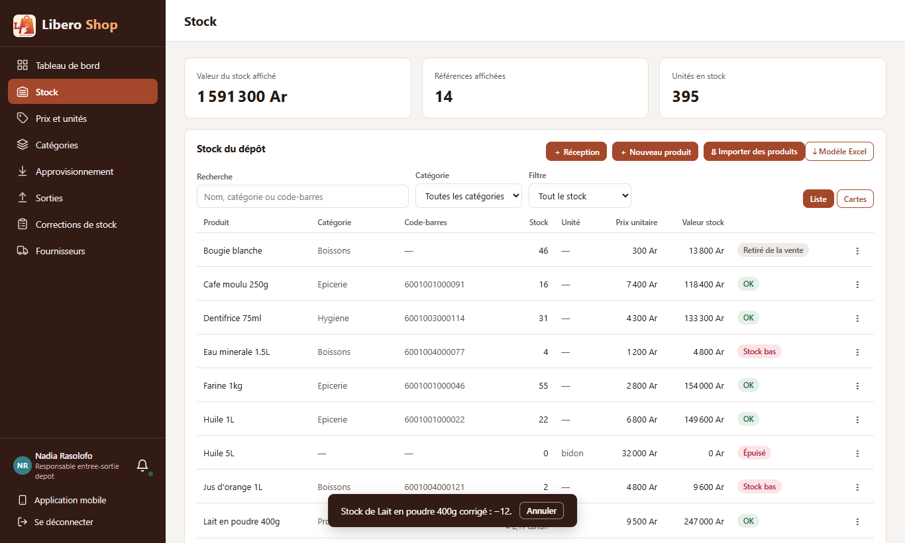

← Tous les comptes rendus de l'interface
UI-35Corriger le stock dans une autre unité
- La correction de stock (fenêtre du menu produit et page « Corrections de stock ») propose un choix « En : unité / carton / sac » pour les produits vendus en plusieurs unités.
- Sous le champ, la conversion est relue : « 2 carton = 24 bouteille », et l'aperçu du stock compte en unités de base.
- Le serveur fait lui-même la conversion, comme pour une réception ; l'historique garde « 2 carton = 24 bouteille » dans le commentaire.
- Un inventaire peut aussi se compter en cartons : 3 cartons comptés = 36 bouteilles.
1. Le problème
Deux cartons de lait tombent du camion : il fallait taper « 24 » (en boîtes), donc faire le calcul de tête. Une erreur de calcul fausse le stock, et l'historique ne montre plus qu'il s'agissait de deux cartons.
2. Ce qui a été fait
La correction envoie l'unité choisie avec la quantité. Le serveur la retrouve parmi les unités du produit (une unité supprimée entre-temps est refusée avec le message habituel), convertit, puis applique les règles de toujours : on ne retire pas plus que le stock, un inventaire égal au stock n'a rien à corriger. Le commentaire saisi se limite désormais à 200 caractères, pour laisser la place à « 2 carton = 24 bouteille ».
3. Le résultat en images
Nadia — responsable de dépôt


4. À éviter / attendu
Convertir dans le navigateur et n'envoyer que « 24 » : l'historique ne dit plus « 2 cartons » et un arrondi du navigateur pourrait différer de celui du serveur.
Envoyer « 2, en carton » : le serveur convertit comme pour une réception et écrit l'unité dans l'historique.
5. Tableau récapitulatif
| Fichier | Changement |
|---|---|
backend/…/web/dto/CreateStockAdjustmentRequest.java | unité facultative (packagingId) ; commentaire 200 caractères |
backend/…/service/StockService.java | conversion en unités de base, « 2 carton = 24 bouteille » dans le commentaire |
ui/…/core/stock/adjustment-unit.ts | nouveau : conversion et ligne relue sous le champ |
ui/…/shared/components/stock-adjust-dialog.component.ts, features/depot-manager/stock-adjustments.component.ts | choix « En », aperçu en unités de base |
| Règle | Test |
|---|---|
| 2 cartons cassés : −24, historique « 2 carton = 24 bouteille — commentaire » | StockAdjustmentTest |
| Inventaire en cartons : 3 cartons comptés = 36, écart −4 | |
| Plus de cartons que le stock : refusé | |
| Conversion, ligne relue seulement pour un carton, arrondi au millième | adjustment-unit.spec.ts |
Tests : serveur au vert (631 tests), interface au vert (304 tests).